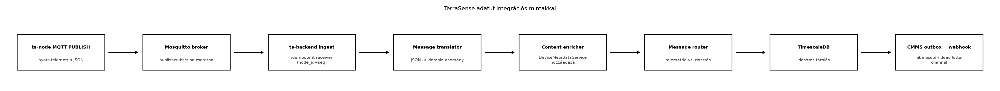

A TerraSense eddig befelé dolgozott: MQTT-ből olvasott, idősorba írt, REST API-t adott. Amint vállalati környezetbe kerül, megjelennek a kifelé irányuló kapcsolatok: a karbantartási rendszernek (CMMS) munkalapot kell nyitni túl magas hőmérséklet esetén, az ERP-nek összesítőt kell küldeni, egy riasztási felület webhookot vár. Ha ezeket a kapcsolatokat egyedi, pontonkénti kóddal oldjuk meg, a backend hamar áttekinthetetlenné válik, a hibakezelés pedig szétszóródik. Az Enterprise Integration Patterns (EIP) célja, hogy az ilyen üzenetfeldolgozási lépéseket újrafelhasználható, jól elnevezett építőelemekre bontsa.
Ebben az alfejezetben az Eseményvezérelt feldolgozás: Kafka és a kézbesítési szemantika alfejezetben bevezetett csatorna- és kézbesítési szemléletet visszük tovább: a mintákat a TerraSense konkrét adatútján alkalmazzuk, és külön hangsúlyt kap az outbox, amely a JEE-ből Spring Bootba: fogalmi híd C/C++ fejlesztőknek alfejezetben megismert Spring-tranzakciókkal dolgozik együtt.
Definíció (üzenet). Az üzenet (message) önálló, továbbítható adatcsomag, amely fejlécből (header) és törzsből (body) áll. A fejléc hordozza az azonosítókat, az időbélyeget, a típust és a kézbesítési metaadatokat; a törzs a tényleges adat.
Definíció (csatorna). A csatorna (message channel) logikai cím, amelyen keresztül az alkalmazások üzenetet küldenek és fogadnak. A csatorna elválasztja a küldőt a fogadótól: a küldő nem ismeri a fogadó címét, csak a csatorna nevét. MQTT-ben a topic, Kafka-ban a topic, JMS-ben a destination tölti be ezt a szerepet.
A gyakorlati integrációkban az üzenetek ritkán érkeznek pontosan abban a formában, ahogy a fogadó várja. A leggyakoribb feldolgozási minták:
TelemetryEvent rekorddá fordítja, vagy a CMMS felé egy
másik JSON-sémát állít elő.node_id és site azonosítót
küld; a backend a DeviceMetadataService-ből kiegészíti az
üzenetet a telepítési hellyel, az eszköztípussal és a karbantartási
felelőssel.Ezek a minták egymásra épülnek. A TerraSense adatútját az alábbi ábra foglalja össze.

A folyamatábra lépései: az eszköz a brokerre küld, ahonnan a backend
fogadja; az ingest idempotensen dolgozik a node_id és
seq párossal; a translator a nyers JSON-ból domain eseményt
készít; az enricher hozzáadja a metaadatot; a router szétválasztja a
normál telemetriát és a riasztást; végül a CMMS felé az outbox minta
biztosítja a konzisztens továbbítást, hiba esetén dead letter channelre
irányítva.
A minták nem mindig szükségesek, és a túlzott használatuk is káros. Az alábbi táblázat a leggyakoribb döntési helyzeteket foglalja össze.
| Helyzet | Ajánlott minta | Indoklás és kompromisszum |
|---|---|---|
| Két rendszer eltérő adatformátumot vár | Message translator | A fordítás egy helyen marad; a küldő és a fogadó nem változik, de a translator újabb karbantartandó komponens. |
| Több fogadó eltérő érdeklődéssel | Message router vagy publish-subscribe | A broker vagy router szétválasztja a felelősségeket; a router feltételes logikája egyszerűbb, de a szabályok növekedésével külön szabálymotor kellhet. |
| Az üzenetből hiányzik a feldolgozáshoz szükséges adat | Content enricher | Külső hívás szükséges, ezért gyorsítótár és időtúllépés nélkül lassíthatja az adatutat. |
| Külső HTTP hívás sikertelen | Dead letter channel + újrapróbálkozás | Nem veszítjük el az üzenetet, de a DLQ-t figyelni kell, különben csendben gyűlik a hiba. |
| Duplikátumok at-least-once kézbesítésnél | Idempotent receiver | Az üzenetazonosító alapú deduplikáció garantálja az egyszeri hatást; a kulcs megválasztása üzleti döntés. |
| A backend adatbázis-írása és üzenetküldése konzisztens kell legyen | Outbox | Ugyanabban a tranzakcióban írjuk az adatot és a kimenő üzenetet; a késleltetés nő, de a konzisztencia garantált. |
A teljes értékű ESB-termékek bemutatása kívül esik ezen alfejezet keretein; a fenti minták könnyű súlyú, alkalmazásba ágyazott megoldások, amelyek a TerraSense méretéhez illeszkednek.
Vegyünk egy konkrét telemetria-üzenetet, amely a
terrasense/gh1/n001/telemetry topicra érkezik:
{
"node_id": "n001",
"site": "gh1",
"seq": 42,
"ts": 1717171200000,
"temp_c": 31.2,
"rh_pct": 55.0,
"soil_pct": 28.0
}A ts-backend MQTT ingest komponense először idempotens
fogadóként működik: a node_id és seq párost
egy processed_sequences táblában tárolja. Ha a pár már
szerepel, az üzenet duplikátum, és a feldolgozás leáll. Ha nem, a
translator egy TelemetryEvent rekorddá alakítja. Az
enricher ezután a DeviceMetadataService-ből kiegészíti az
eszköz metaadataival:
public class TelemetryEnricher {
private final DeviceMetadataService metadata;
public EnrichedTelemetry enrich(TelemetryEvent event) {
DeviceMetadata meta = metadata.get(event.nodeId());
return new EnrichedTelemetry(
event, meta.siteName(), meta.deviceType(), meta.maintenanceOwner());
}
}A router a hőmérsékleti küszöb alapján dönt. Ha
temp_c > 30.0, az esemény a riasztási csatornára is
kerül, és a CMMS felé munkalapot kell nyitni:
public class TelemetryRouter {
private final MessageChannel timeseriesOutput;
private final MessageChannel alarmOutput;
public void route(EnrichedTelemetry event) {
timeseriesOutput.send(event);
if (event.telemetry().tempC() > 30.0) {
alarmOutput.send(event);
}
}
}A CMMS felé történő továbbítás outbox-szal valósul meg. A
cmms_outbox tábla rekordja ugyanabban a
Spring-tranzakcióban jön létre, mint az idősoros beszúrás. Egy ütemezett
OutboxPublisher kiolvassa a PENDING
rekordokat, REST POST-ot küld a CMMS
https://cmms.internal/api/work-orders végpontjára, majd
sikeres válasz esetén SENT állapotúra állítja a rekordot.
Ha a hívás 5xx hibával vagy időtúllépéssel zárul, a rekord
FAILED marad, és egy másolat a lab-cmms-dlq
MQTT topicra kerül. A DLQ-t egy adminisztrációs folyamat figyeli, és
emberi beavatkozás vagy automatikus újrapróbálkozás után visszajátssza
az üzenetet.
A CMMS hívás idempotens: minden kimenő munkalaphoz generálunk egy
work_order_id értéket, amelyet a HTTP-kérés
Idempotency-Key fejlécében küldünk. A CMMS ezt a kulcsot
egyedi azonosítóként kezeli, így a hálózati újrapróbálkozás nem hoz
létre duplikált munkalapot.
Továbbvitt eredmény. A cmms_outbox
tábla sémája, az OutboxPublisher feldolgozási logikája és a
work_order_id idempotencia-kulcs koncepciója közvetlenül
megalapozza a Parancsok és konfiguráció lefelé:
kézbesítés, nyugtázás, időkorlát alfejezet parancs-nyugtázási
mechanizmusát, valamint a Felhős és nyílt forrású
IoT-platformok: mikor építs, mikor vásárolj alfejezet build-vs-buy
döntését.
A minták helyes működését legjobban rétegenkénti tesztekkel
ellenőrizhetjük. Az enricher egységtesztje egy rögzített
DeviceMetadata objektummal dolgozik, és azt vizsgálja, hogy
a kiegészített mezők megjelennek. A router tesztje egy 29,9 °C-os és egy
30,1 °C-os eseményt ad be, és ellenőrzi, hogy csak a második kerül az
alarm csatornára. Az outbox tesztje egy H2 vagy Testcontainers
PostgreSQL adatbázisban futtatja a tranzakciót, majd a
cmms_outbox táblában ellenőrzi a rekordot. Az idempotens
ingest tesztje ugyanazt a (node_id, seq) párt kétszer küldi
be, és meggyőződik róla, hogy az idősoros táblában csak egy sor
keletkezik.
A leggyakoribb üzemeltetési hibák:
| Tünet | Ok | Javítás |
|---|---|---|
| A CMMS nem kap eseményeket, de a DLQ üres | Az outbox publisher nem fut, vagy a PENDING rekordok
felhalmozódtak |
Ellenőrizzük a publisher ütemezőjét és a logját; indítsuk újra, majd
figyeljük a cmms_outbox.status oszlopot. |
| A DLQ tele van ugyanazzal az üzenettel | A CMMS 4xx hibát ad (pl. érvénytelen séma), és a feldolgozó újrapróbálja | Javítsuk a translator sémáját, majd a DLQ-ról játsszuk vissza az üzenetet. |
| Duplikált munkalapok a CMMS-ben | Az Idempotency-Key hiányzik vagy nem egyedi |
Generáljunk a work_order_id-ból egyedi kulcsot, és a
CMMS oldalán tegyük kötelezővé a deduplikációt. |
| Az idősoros táblában duplikált sorok | Az idempotens receiver nem tárolja a node_id+seq
párt |
Vezessünk be egy egyedi megszorítást a
processed_sequences táblára, és tranzakcióban
dolgozzunk. |
work_order_id nem lehet a CMMS
által generált, hanem a küldő oldalán kell keletkeznie.DeviceMetadataService-t érdemes rövid
TTL-es cache-sel ellátni, mert a metaadat ritkán változik.Nevezzen meg legalább három EIP-mintát, amely a TerraSense adatútjában megjelenik, és adja meg, melyik komponensben vagy lépésben alkalmazzuk.
Tervezze meg egy CMMS felé irányuló integráció üzenetformátumát. Milyen mezőket tartalmaz a CMMS-nek küldött esemény? Hogyan biztosítja az idempotenciát? Mi kerül a dead letter channelre?
Írjon egy Java MessageRouter osztályt, amely a
TelemetryEvent üzeneteket a timeseries
kimenetre mindig, az alarm kimenetre pedig akkor irányítja,
ha a talajnedvesség soil_pct értéke 20 alá csökken. A
router ne módosítsa az üzenet törzsét.
Az outbox táblában sok PENDING rekord gyűlt össze, és a
CMMS nem kap új eseményeket. Milyen lehetséges okokat vizsgál? Hogyan
folytatja az újrapróbálkozást úgy, hogy ne keletkezzenek duplikált
munkalapok?
Például: - Idempotent receiver a ts-backend MQTT
ingest lépésében, a node_id + seq páros alapján. -
Content enricher a backendben, amikor a
DeviceMetadataService hozzáadja a helyszín- és
eszközmetaadatot. - Message router a telemetria és
riasztás szétválasztásakor. - Outbox a CMMS felé
történő munkalap-küldéskor. - Dead letter channel a
sikertelen CMMS-kézbesítés esetén.
A CMMS-nek küldött esemény minimális sémája:
{
"work_order_id": "gh1-n001-1717171200000-42",
"node_id": "n001",
"site": "gh1",
"fault_type": "high_temperature",
"severity": "critical",
"timestamp": 1717171200000,
"value": 31.2
}Az idempotenciát a work_order_id biztosítja: a CMMS
egyedi kulcsként kezeli, és a duplikált kéréseket 200 OK vagy 409
Conflict válasszal, de új munkalap nélkül fogadja. A dead letter
channelre a 4xx validációs hibák és az 5xx szerverhibák kerülnek, de a
400-as validációs hiba esetén emberi javítás szükséges, míg az 5xx
esetén automatikus újrapróbálkozás is lehetséges.
public class SoilMoistureRouter {
private final MessageChannel timeseriesOutput;
private final MessageChannel alarmOutput;
public void route(TelemetryEvent event) {
timeseriesOutput.send(event);
if (event.soilPct() < 20.0) {
alarmOutput.send(event);
}
}
}A router nem módosítja az event objektumot, csak a
feltétel alapján irányít.
Lehetséges okok: az OutboxPublisher ütemezett szál
leállt, a CMMS endpoint nem érhető el, vagy a hálózati tűzfal blokkolja
a kimenő hívást. Ellenőrizzük a publisher logját és a
cmms_outbox.status oszlopot. Az újrapróbálkozást idempotens
módon úgy folytatjuk, hogy minden rekordhoz tartozik egy
work_order_id, és a HTTP-kérésben elküldjük az
Idempotency-Key fejlécet. A publisher csak akkor állítja
SENT állapotúra a rekordot, ha a CMMS 2xx választ ad;
ellenkező esetben FAILED marad, és egy másolat a DLQ-ra
kerül, hogy ne vesszen el az esemény.
Az alfejezet az Enterprise Integration Patterns alapmintáit
alkalmazta a TerraSense adatútjára: a message translator a JSON-t domain
eseménnyé alakítja, a content enricher a
DeviceMetadataService-ből hiányzó metaadatot ad hozzá, a
message router a telemetriát és a riasztást választja szét, a dead
letter channel a sikertelen CMMS-kézbesítést fogadja, az idempotent
receiver a node_id+seq párral szűri a duplikátumokat, az
outbox pedig a TimescaleDB-írás és a CMMS REST-hívás közötti
konzisztenciát biztosítja. Továbbvitt eredmény: a
cmms_outbox tábla, az OutboxPublisher, a
work_order_id idempotencia-kulcs és az enricher minta
közvetlenül hasznosul a Parancsok és konfiguráció
lefelé: kézbesítés, nyugtázás, időkorlát alfejezetben és a Felhős és nyílt forrású IoT-platformok: mikor építs,
mikor vásárolj alfejezet build-vs-buy értékelésénél.
MessageChannel, a @Scheduled és a tranzakciós
outbox megvalósításának API-nevei ellenőrizendők.